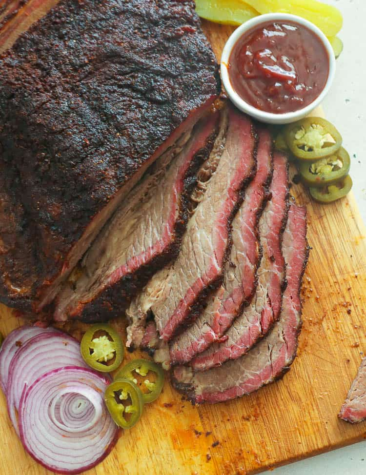

Brisket

This is my favorite way to prepare some flavorful brisket!
Ingredients
The Brisket
Apple Juice
Salt and Pepper
Garlic Salt
Steps
Trim the fat off of the brisket.
Season with salt, pepper, and garlic salt.
Place on smoker at 225 degrees.
Spritz with apple juice and water every two hours.
At around the 8 hour mark, take brisket out and wrap it in aluminum foil.
Check for tenderness and temperature around the 10-10.5 hour mark.
Take off the grill and let it sit for 30 minutes to an hour then enjoy!